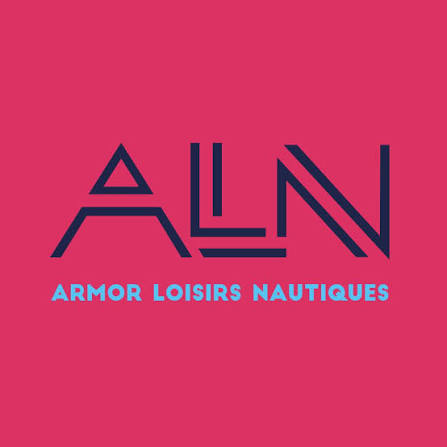

01
Échanger, en toute confiance
Nous prenons le temps d’écouter votre histoire, vos souhaits et vos questions, sans précipitation.

ARMOR LOISIRSOffrir à un être cher un dernier hommage en mer.
Un instant de paix, de recueillement et de liberté, au large des côtes bretonnes.
Il y a des vies qui restent en nous comme le bruit des vagues, comme la lumière sur l’eau. Pour celles et ceux qui ont aimé la mer, ou qui rêvaient simplement de grands horizons, la dispersion des cendres en mer peut devenir un geste profondément personnel : une façon douce et sincère de dire au revoir.
Face à la beauté simple des paysages bretons, le temps semble ralentir. Le vent, la lumière, le mouvement des marées : tout invite à se retrouver autour de l’essentiel.
En famille ou dans l’intimité, chacun peut vivre ce moment à sa manière. Quelques mots, une musique, une fleur, un silence… Rien n’est imposé. Seul compte ce qui a du sens pour vous.
« On ne quitte jamais vraiment ceux que l’on aime.
On apprend à les retrouver autrement. »
Parce qu’aucun adieu ne ressemble à un autre, l’accompagnement se construit autour de vos souhaits, dans le respect des conditions de navigation et du cadre réglementaire.
Nous prenons le temps d’écouter votre histoire, vos souhaits et vos questions, sans précipitation.
La sortie est envisagée en baie de Saint-Brieuc, selon la météo, l’état de la mer et les conditions de sécurité.
Un temps de recueillement libre, intime et digne, pour accompagner ce dernier geste et garder une trace intérieure de ce moment.
Vous souhaitez poser une question, comprendre les possibilités ou simplement parler de votre projet d’hommage en mer ? Prenez contact avec Armor Loisirs Nautiques. Nous vous répondrons avec discrétion et attention.
NOUS ÉCRIRE EN TOUTE CONFIDENTIALITÉ ↗Les modalités de dispersion et les démarches administratives sont à confirmer selon votre situation et avec les professionnels habilités concernés. Toute sortie reste soumise aux conditions de mer.